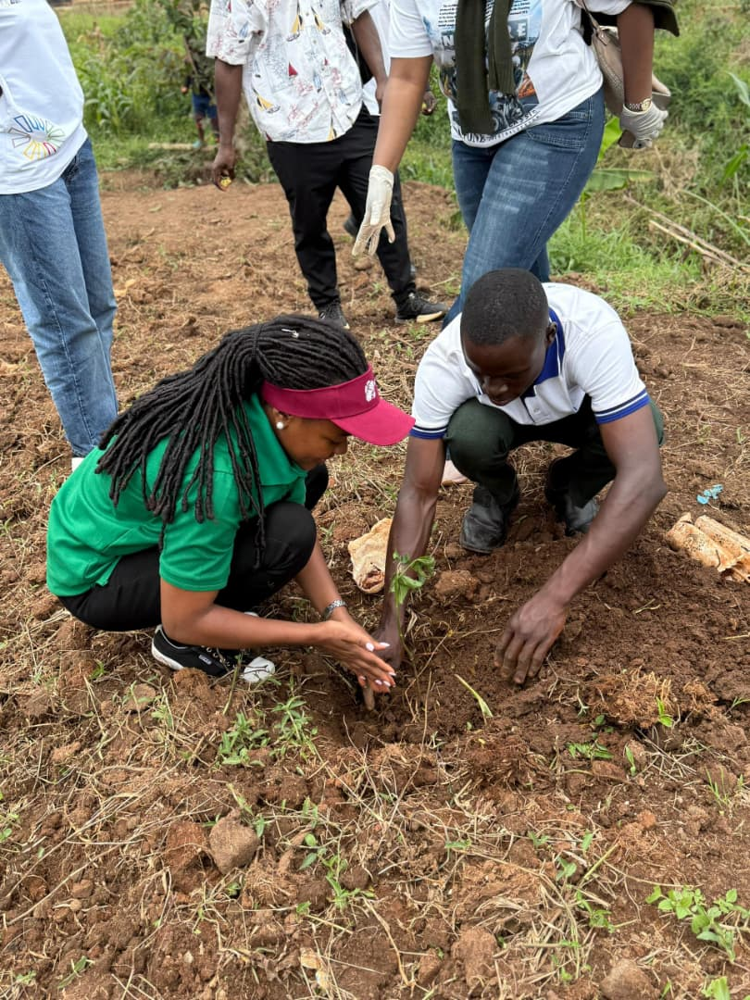
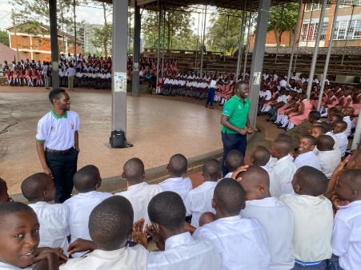
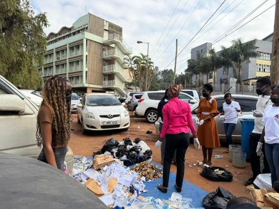
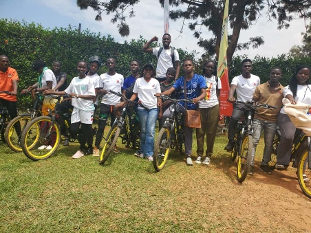

Real environmental work in Kawempe — and a public record you can check.
ECO-BRIDGE KAWEMPE is a 21-member community-based organization running tree planting, waste management, WASH education, and youth livelihood programs in Kawempe Division. Every claim we make here links back to the actual document behind it.

Five objectives, all rooted in Kawempe Division
Drawn directly from Article 6 of our Constitution and our 2026–2027 Work Plan — read the full documents.
Environmental conservation
Tree planting, waste management, clean-up activities, and pollution reduction within Kawempe Division and surrounding communities.
Community health & WASH
Water, Sanitation and Hygiene education, environmental health awareness, and disease prevention in schools and households.
Economic empowerment
Vocational skills training in composting and plastic upcycling — turning environmental work into income for youth and women.
Environmental literacy
School outreach programmes, community workshops, and environmental clubs that build youth leadership.
Civic engagement
Working closely with Local Council leaders, KCCA, and partner organisations on community participation.
What our members have actually been doing



A website you can fact-check, not just a website you can read
Most small community organizations ask you to trust their marketing copy. We'd rather you check our actual paperwork — our Constitution, our Executive Committee, our Work Plan, and our activity record — for yourself.